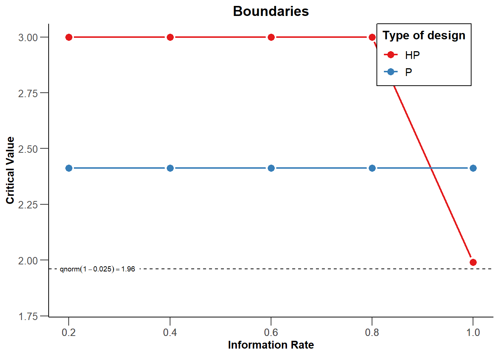

Power analysis for interactions
Based on our recent preprint explaining power analysis for ANOVA designs, in this post I want provide a step-by-step mathematical overview of power analysis for interactions. These details often do not make it into tutorial papers because of word limitations, and few good free resources are available (for a paid resource worth your money, see Maxwell, Delaney, & Kelley, 2018). This post is a bit technical, but nothing in this post requires more knowedge than multiplying and dividing numbers, and I believe that for anyone willing to really understand effect sizes and power in ANOVA designs digging in to these details will be quite beneficial. There are three take-home messages in this section.
- In power analyses for ANOVA designs, you should always think of the predicted pattern of means. Different patterns of means will have the same effect size, and your intuition can not be relied on when predicting an effect size for ANOVA designs.
- Understanding how patterns of means relate to the effect you predict is essential to design an informative study.
- Always perform a power analysis if you want to test a predicted interaction effect, and always calculate the effect size based on means, sd’s, and correlations, instead of plugging in a ‘medium’ partial eta squared.
- Crossover interaction effects have large effects and can thus be studies with high power in smaller samples, and if your theory can predict crossover interactions, such experiments might be worthwhile to design.
- There are some additional benefits of examining interactions (risky predictions, generalizability, efficiently examining multiple main effects) and it would be a shame if the field is turned away from examining interactions because they sometimes require large samples.
Getting started: Comparing two groups
We are planning a two independent group experiment. We are using a validated measure, and we know the standard deviation of our measure is approximately 2. Psychologists are generaly horribly bad at knowing the standard deviation of their measures, even though a very defensible position is that you are not ready to perform a power analysis without solid knowledge of the standard deviation of your measure. We are interested in observing a mean difference of 1 or more, because smaller effects would not be practically meaningful. We expect the mean in the control condition to be 0, and therefore want the mean in the intervention group to be 1 or higher.
This means the standardized effect size is the mean difference, divided by the standard deviation, or 1/2 = 0.5. This is the Cohen’s d we want to be able to detect in our study:
\[\begin{equation} d = \frac{m_1-m_2}{\sigma} = \frac{1-0}{2} = 0.5. \end{equation}\]
An independent t-test is mathematically identical to an F-test with two groups. For an F-test, the effect size used for power analyses is Cohen’s f, which is a generalization of Cohen’s d to more than two groups (Cohen, 1988). It is calculated based on the standard deviation of the population means divided by the population standard deviation which we know for our measure is 2), or:
\[\begin{equation} f = \frac{\sigma _{ m }}{\sigma} \end{equation}\] where for equal sample sizes, \[\begin{equation} \sigma _{ m } = \sqrt { \frac { \sum_ { i = 1 } ^ { k } ( m _ { i } - m ) ^ { 2 } } { k } }. \end{equation}\]
In this formula m is the grand mean, k is the number of means, and m_i is the mean in each group. The formula above might look a bit daunting, but calculating Cohen’s f is not that difficult for two groups.
If we take the expected means of 0 and 1, and a standard deviation of 2, the grand mean (the m in the formula above) is (0 + 1)/2 = 0.5. The formula says we should subtract this grand mean from the mean of each group, square this value, and sum them. So we have (0-0.5)^2 and (1-0.5)^2, which are both 0.25. We sum these values (0.25 + 0.25 = 0.5), divide them by the number of groups (0.5/2 = 0.25) and take the square root, we find that \(\sigma_{ m }\) = 0.5. We can now calculate Cohen’s f (remember than we know \(\sigma\) = 2 for our measure):
\[\begin{equation} f = \frac{\sigma _{ m }}{\sigma} = \frac{0.5}{2} = 0.25 \end{equation}\]
We see that for two groups Cohen’s f is half as large as Cohen’s d, or \(f = \frac{1}{2}d\), which always holds for an F-test with two independent groups.
Although calculating effect sizes by hand is obviously an incredibly enjoyable thing to do, you might prefer using software that performs these calculations for you. Here, I will use our Superpower power analysis package (developed by Aaron Caldwell and me). The code below uses a function from the package that computes power analytically for a one-way ANOVA where all conditions are manipulated between participants. In addition to the effect size, the function will compute power for any sample size per condition you enter. Let’s assume you have a friend who told you that they heard from someone else that you now need to use 50 observations in each condition (n = 50), so you plan to follow this trustworthy advice. We see the code below returns a Cohen’s f of 0.25, and also tells us we would have 61.78% power if we use a preregistered alpha level of 0.03.

## [1] 0.25## [1] 61.78474We therefore might want to increase our sample size for our planned study. Using the plot_power function, we can see we would pass 90% power with 100 observations per condition.

## Achieved Power and Sample Size for ANOVA-level effects
## variable label n achieved_power desired_power
## 1 a Desired Power Achieved 96 90.13 90
Interaction Effects
So far we have explained the basics for effect size calculations (and we have looked at statistical power) for 2 group ANOVA designs. Now we have the basis to look at interaction effects.
One of the main points in this blog post is that it is better to talk about interactions in ANOVAs in terms of the pattern of means, standard deviations, and correlations, than in terms of a standarized effect size. The reason for this is that, while for two groups a difference between means directly relates to a Cohen’s d, wildly different patterns of means in an ANOVA will have the same Cohen’s f. In my experience helping colleagues out their with power analyses for ANOVA designs, talking about effects in terms of a Cohen’s f is rarely a good place to start when thinking about what your hypothesis predicts. Instead, you need to specify the predicted pattern of means, have some knowledge about the standard deviation of your measure, and then calculate your predicted effect size.
There are two types of interactions, as visualized below. In an ordinal interaction, the mean of one group (“B1”) is always higher than the mean for the other group (“B2”). Disordinal interactions are also known as ‘cross-over’ interactions, and occur when the group with the larger mean switches over. The difference is important, since another main takeaway of this blog post is that, in two studies where the largest simple comparison has the same effect size, a study with a disordinal interaction has much higher power than a study with an ordinal interaction. Thus, if possible, you will want to design experiments where an effect in one condition flips around in the other condition, instead of an experiment where the effect in the other condition just disappears. I personally never realized this before I learned how to compute power for interactions, and never took this simple but important fact into account. Let’s see why it is important.
Calculating effect sizes for interactions

Mathematically the interaction effect is computed as the cell mean minus the sum of the grand mean, the marginal mean in each condition of one factor minus the grand mean, and the marginal mean in each condition for the other factor minus grand mean (see Maxwell et al., 2017).
Let’s consider two cases comparable to the figure above, one where we have a perfect disordinal interaction (the means of 0 and 1 flip around in the other condition, and are 1 and 0) or an ordinal interaction (the effect is present in one condition, with means of 0 and 1, but there is no effect in the other condition, and both means are 0). We can calcuate the interaction effect as follows. First, let’s look at the interaction in a 2x2 matrix:

## a1 a2
## b1 1 0
## b2 0 1The grand mean is (1 + 0 + 0 + 1) / 4 = 0.5.
We can compute the marginal means for A1, A2, B1, and B2, which is simply averaging per row and column, which gets us for the A1 column (1+0)/2=0.5. For this perfect disordinal interaction, all marginal means are 0.5. This means there are no main effects. There is no main effect of factor A (because the marginal means for A1 and A2 are both exactly 0.5), nor is there a main effect of B.
We can also calculate the interaction effect. For each cell we take the value in the cell (e.g., for a1b1 this is 1) and compute the difference between the cell mean and the additive effect of the two factors as:
1 - (the grand mean of 0.5 + (the marginal mean of a1 minus the grand mean, or 0.5 - 0.5 = 0) + (the marginal mean of b1 minus the grand mean, or 0.5 - 0.5 = 0)). Thus, for each cell we get:
a1b1: 1 - (0.5 + (0.5 -0.5) + (0.5 -0.5)) = 0.5
a1b2: 0 - (0.5 + (0.5 -0.5) + (0.5 -0.5)) = -0.5
a2b1: 0 - (0.5 + (0.5 -0.5) + (0.5 -0.5)) = -0.5
a2b2: 1 - (0.5 + (0.5 -0.5) + (0.5 -0.5)) = 0.5
Cohen’s \(f\) is then \(f = \frac { \sqrt { \frac { 0.5^2 +-0.5^2 + -0.5^2 + 0.5^2 } { 4 } }}{ 2 } = 0.25\)
or in R code: sqrt(((0.5)^2 +(-0.5)^2 + (-0.5)^2 + (0.5)^2)/4)/2 = 0.25.
For the ordinal interaction the grand mean is (1 + 0 + 0 + 0) / 4, or 0.25. The marginal means are a1: 0.5, a2: 0, b1: 0.5, and b2: 0.
Completing the calculation for all four cells for the ordinal interaction gives:
a1b1: 1 - (0.25 + (0.5 -0.25) + (0.5 -0.25)) = 0.25
a1b2: 0 - (0.25 + (0.5 -0.25) + (0.0 -0.25)) = -0.25
a2b1: 0 - (0.25 + (0.0 -0.25) + (0.5 -0.25)) = -0.25
a2b2: 0 - (0.25 + (0.0 -0.25) + (0.0 -0.25)) = 0.25
Cohen’s \(f\) is then \(f = \frac { \sqrt { \frac { 0.25^2 +-0.25^2 + -0.25^2 + 0.25^2 } { 4 } }}{ 2 } = 0.125\).
or in R code: sqrt(((0.25)^2 +(-0.25)^2 + (-0.25)^2 + (0.25)^2)/4)/2 = 0.125.
We see the effect size of the cross-over interaction (f = 0.25) is twice as large as the effect size of the ordinal interaction (f = 0.125).
If the math so far was a bit too much to follow, there is an easier way to think of why the effect sizes are halved. In the disordinal interaction we are comparing cells a1b1 and a2b2 against a1b2 and a2b1, or (1+1)/2 vs. (0+0)/2. Thus, if we see this as a t-test for a contrast, it is clear the mean difference is 1, as it was in the simple effect we started with. For the ordinal interaction, we have (1+0)/2 vs. (0+0)/2, so the mean difference is halved, namely 0.5.
Power for interactions
All of the above obviously matters for the statistical power we will have when we examine interaction effects in our experiments. Let’s use Superpower to perform power analyses for the disordinal interaction first, if we would collect 50 participants in each condition.

## Power and Effect sizes for ANOVA tests
## power partial_eta_squared cohen_f non_centrality
## a 3.000 0.00 0.0000 0.0
## b 3.000 0.00 0.0000 0.0
## a:b 91.055 0.06 0.2525 12.5
##
## Power and Effect sizes for pairwise comparisons (t-tests)
## power effect_size
## p_a_a1_b_b1_a_a1_b_b2 61.78 -0.5
## p_a_a1_b_b1_a_a2_b_b1 61.78 -0.5
## p_a_a1_b_b1_a_a2_b_b2 3.00 0.0
## p_a_a1_b_b2_a_a2_b_b1 3.00 0.0
## p_a_a1_b_b2_a_a2_b_b2 61.78 0.5
## p_a_a2_b_b1_a_a2_b_b2 61.78 0.5First let’s look at the Power and Effect size for the pairwise comparisons. Not surprisingly, these are just the same as our original t-test, given that we have 50 observations per condition, and our mean difference is either 1, or a Cohen’s d of 0.5 (in which case we have 61.78% power) or the mean difference is 0, and we have no power (because there is no true effect) but we wil observe significant results 3% of the time because we set our alpha level to 0.03.
Then, let’s look at the results for the ANOVA. Since there are no main effects in a perfect crossover interaction, we have a 3% Type 1 error rate. We see the power for the crossover interaction between factor a and b is 91.06%. This is much larger than the power for the simple effects. The reason is that the contrast that is equal to the test of the interaction is based on all 200 observations. Unlike the pairwise comparisons with 50 vs 50 observations, the contrast for the interaction has 100 vs 100 observations. Given that the effect size is the same (f = 0.25) we end up with much higher power.
If you current think it is impossible to find a statistically significant interaction without a huge sample size, you clearly see this is wrong. Power can be higher for an interaction than for the simpe effect - but this depends on the pattern of means underlying the interaction. If possible, design studies where your theory predicts a perfect crossover interaction.
For the ordinal interaction, our statistical power does not look that good based on an a-priori power analysis. Superpower tells us we have 33.99% power for the main effects and interaction (yes, we have exactly the same power for all three - if you think about the three contrasts that are tested, these have the same effect size).

## Power and Effect sizes for ANOVA tests
## power partial_eta_squared cohen_f non_centrality
## a 33.9869 0.0157 0.1263 3.125
## b 33.9869 0.0157 0.1263 3.125
## a:b 33.9869 0.0157 0.1263 3.125
##
## Power and Effect sizes for pairwise comparisons (t-tests)
## power effect_size
## p_a_a1_b_b1_a_a1_b_b2 61.78 -0.5
## p_a_a1_b_b1_a_a2_b_b1 61.78 -0.5
## p_a_a1_b_b1_a_a2_b_b2 61.78 -0.5
## p_a_a1_b_b2_a_a2_b_b1 3.00 0.0
## p_a_a1_b_b2_a_a2_b_b2 3.00 0.0
## p_a_a2_b_b1_a_a2_b_b2 3.00 0.0If you have heard people say you should be careful when designing studies predicting interaction patterns because you might have very low power, this is the type of pattern of means they are warning about. Maxwell, Delaney, and Kelley (2018) discuss why power for interactions is often smaller, and note interactions effects are often smaller in the real world, and we often examine ordinal interactions. This might be true. But in experimental psychology it might be possile to think about hypotheses that predict disordinal interactions. In addition to the fact that such predictions are often theoretically riskier and more impressive (after all, many things can make an effect go away, but without your theory it might be difficult to explain why an effect flips around) they also have larger effects and are easier to test with high power.
Some years ago other blog posts by Uri Simonsohn and Roger Giner-Sorolla did a great job in warning researchers they need large sample sizes for ordinal interactions, and my post repeats this warning. But it would be a shame if researchers would stop examining interaction effects. There are some nice benefits studying interactions, such as 1) making riskier theoretical predictions, 2) greater generalizability (if there is no interaction effect, you might show a main effect operates across different conditions of a second factor) and 3) if you want to study two main effects it is more efficient to do this in a 2x2 design than in two seperate designs (Maxwell, Delaney, & Kelley, 2018). So maybe this blog post has been able to highlight some scenarios where examining interaction effects is still beneficial.
Aberson, Christopher L. 2019. Applied Power Analysis for the Behavioral Sciences: 2nd Edition. 2 edition. New York: Routledge.
Cohen, Jacob. 1988. Statistical Power Analysis for the Behavioral Sciences. 2nd ed. Hillsdale, N.J: L. Erlbaum Associates.
Neyman, Jerzy, and E. S. Pearson. 1933. “On the Problem of the Most Efficient Tests of Statistical Hypotheses.” Philosophical Transactions of the Royal Society of London A: Mathematical, Physical and Engineering Sciences 231 (694-706): 289–337. https://doi.org/10.1098/rsta.1933.0009.
Schulz, Kenneth F., and David A. Grimes. 2005. “Sample Size Calculations in Randomised Trials: Mandatory and Mystical.” The Lancet 365 (9467): 1348–53.